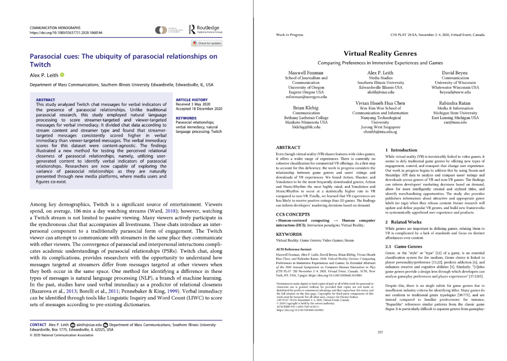

Chapter 3 Introduction to Research Papers
3.1 What are Research Papers
Research papers, often referred to as scholarly articles, serve as vital conduits for disseminating original research findings, theoretical explorations, or critical analyses within the academic community. These documents are integral to the advancement of knowledge in various disciplines, providing a formalized medium through which researchers communicate their contributions to the broader academic and professional audience. Research papers are typically published in reputable academic journals, which are often associated with professional organizations or academic institutions. These journals serve as repositories of knowledge, where scholars can access and build upon the work of others, fostering the cumulative growth of knowledge in their respective fields.
Originality
Originality is a fundamental criterion that distinguishes a research paper from other forms of academic writing. In the context of research, originality refers to the introduction of novel ideas, methods, or interpretations that have not been previously explored or sufficiently addressed within the existing body of literature. The originality of a research paper can be manifested through the identification of a unique research question or problem, the development of an innovative methodological approach, or the provision of fresh empirical evidence that challenges or refines established theories. This originality is not merely about being new for the sake of novelty; it must be significant and relevant, offering meaningful contributions to the academic field. An original research paper often fills a gap in the literature, addresses an overlooked aspect of a known issue, or provides new insights that lead to further research inquiries.
Methodology
Methodology in a research paper is more than just a set of procedures; it is the backbone of the research that ensures the study’s validity, reliability, and replicability. A well-defined methodology provides a clear roadmap for how the research was conducted, including the selection of participants or data sources, the tools and techniques used for data collection, and the methods of analysis. The methodology should be meticulously documented so that other researchers can critically assess the study’s rigor and potentially replicate the findings in different contexts or with different samples. Moreover, a robust methodology reflects an understanding of the methodological challenges inherent to the research question and demonstrates the researcher’s ability to address these challenges in a scientifically sound manner. The methodology section is where the researcher defends their choice of methods and discusses their limitations, providing a transparent account of the research process.
Evidence-Based
An evidence-based research paper is grounded in the systematic collection and analysis of data, which serves as the foundation for the paper’s arguments and conclusions. The evidence presented can take many forms, including quantitative data from experiments or surveys, qualitative data from interviews or observations, or secondary data from existing literature. Regardless of the type of evidence, the key is that it must be relevant, reliable, and sufficient to support the research claims. Researchers must critically evaluate the evidence they collect, using appropriate analytical techniques to draw valid inferences. This process includes acknowledging any potential biases or limitations in the data, ensuring that the evidence is presented transparently and interpreted accurately. An evidence-based approach not only strengthens the credibility of the research findings but also aligns the study with the broader principles of scientific inquiry, where conclusions are drawn based on observable and verifiable facts rather than conjecture.
Peer Review
Peer review is an essential component of the scholarly publication process, serving as a quality control mechanism that upholds the standards of academic integrity. During peer review, a research paper is scrutinized by independent experts in the relevant field who evaluate the paper’s methodological soundness, the originality of its contributions, and the significance of its findings. The peer reviewers assess whether the research question is well-defined, whether the methodology is appropriate and rigorously applied, and whether the conclusions are adequately supported by the evidence. This process often involves multiple rounds of feedback, where the author is required to address reviewers’ comments and make necessary revisions. The objective of peer review is to ensure that the research is robust, credible, and worthy of publication, thus contributing to the advancement of knowledge in the field. The peer review process also provides an opportunity for the author to refine their work based on expert feedback, enhancing the overall quality and impact of the research.
Structure
The structure of a research paper is designed to facilitate the clear and logical presentation of the research process and findings. A typical research paper is organized into several key sections: the abstract, introduction, literature review, methodology, results, discussion, and references. Each section serves a distinct purpose in the overall narrative of the paper. The abstract offers a brief summary of the research, providing readers with an overview of the study’s objectives, methods, and key findings. The introduction establishes the research context, presenting the research question and its significance while reviewing relevant literature to position the study within the existing body of knowledge. The methodology section details the research design and methods used, allowing for transparency and reproducibility. The results section presents the findings, often with the aid of tables, figures, or other visual aids. The discussion interprets these findings, exploring their implications, limitations, and potential for future research. Finally, the references section cites all the sources used, ensuring proper attribution and enabling readers to locate the original sources for further investigation. This structured approach not only enhances the clarity and coherence of the paper but also ensures that it meets the rigorous standards of academic writing.
3.2 How to Find Research Papers
Finding research papers is an essential skill for students and researchers alike. Research papers are the backbone of academic work, providing the evidence, insights, and foundations necessary for developing new theories, testing hypotheses, and building knowledge. Whether you’re writing a paper, preparing a presentation, or simply expanding your understanding of a topic, knowing how to locate and access research papers efficiently is crucial. Below are some effective strategies to help you find the research papers you need.
Check Your University Library
Your university library is one of the most valuable resources for finding research papers. University libraries provide access to a vast array of academic materials, including books, journals, and databases that are often not available for free online. Here’s how to make the most of your university library’s resources:
Talk to a Librarian. Librarians are highly trained in information retrieval and can assist you in finding the most relevant and high-quality research papers for your topic. They can guide you to the right databases, help you refine your search strategies, and even suggest keywords or subject headings you might not have considered. Many libraries also offer personalized research consultations where you can get in-depth assistance on your specific research needs.
Use the Library’s Online Catalog. The online catalog is a powerful tool that allows you to search the entire collection of your university library, including books, journals, e-books, and other materials. You can narrow down your results by using specific search terms or filters to find the most relevant research papers. Most catalogs also allow you to see whether the materials are available physically in the library or online.
Access the Library’s Databases. University libraries subscribe to many academic databases that provide access to thousands of scholarly journals, articles, and other resources. These databases are often organized by subject, making finding research papers in your field of study easier. Popular databases include JSTOR, ProQuest, and EBSCOhost, among others. Databases can usually be searched by keyword, author, or subject, and many offer advanced search options that allow you to combine terms and apply filters to get the best results.
Use a specialized search engine.
Specialized search engines are designed to search for specific types of information, such as research articles. Here are some tips on how to use a specialized search engine to find research articles:
Where to Search
When searching for research articles, knowing where to search is just as important as how you search. Specialized search engines are designed specifically for academic and scholarly materials, making them ideal tools for finding high-quality research papers. Unlike general search engines like Google, these specialized tools index scholarly content such as journal articles, conference papers, and theses. Below are some key specialized search engines and tips on how to choose the right one for your research needs.
Selecting the appropriate search engine depends on your research topic. If you’re studying medicine or biology, PubMed should be your first choice. For engineering and technology, IEEE Xplore and ACM Digital Library are more suitable. If your research spans multiple disciplines, starting with Google Scholar, Web of Science, or Scopus may yield the broadest results.
1. Google Scholar
Google Scholar is one of the most widely used academic search engines. It provides access to a broad range of scholarly articles, theses, books, conference papers, and patents across various disciplines. It’s a good starting point for most research topics due to its extensive coverage.
2. PubMed
PubMed is the go-to search engine for research in the biomedical and life sciences. It offers a comprehensive collection of articles from journals in medicine, biology, and health-related fields. If your research is in these areas, PubMed is an indispensable resource.

3. Web of Science
Web of Science is a powerful tool that covers a wide array of disciplines, including the sciences, social sciences, arts, and humanities. It is particularly useful for citation tracking, allowing you to see how often an article has been cited by others, which can help you gauge its impact and relevance.
4. Scopus
Scopus is another multidisciplinary database, with an extensive collection of articles in the sciences, technology, medicine, social sciences, and more. Scopus also provides citation analysis, making it useful for understanding the influence of a particular study within its field.

5. IEEE Xplore
IEEE Xplore is the premier search engine for research in electrical engineering, computer science, and electronics. It indexes a vast number of conference papers, journal articles, and standards published by the IEEE.
6. ACM Digital Library
The ACM Digital Library is essential for computer science research, offering a wide range of articles, conference proceedings, and other publications by the Association for Computing Machinery. It is particularly valuable for topics in software engineering, computer systems, and human-computer interaction.
How to Search
Once you’ve chosen where to search, understanding how to effectively use these tools is crucial for finding the most relevant and high-quality research articles. Below are strategies to help you optimize your search process.
1. Use Keywords Effectively
Keywords are the foundation of any search. Start by identifying the main concepts of your research topic. For example, if you’re researching the effects of social media on mental health, your main keywords might be “social media,” “mental health,” and “impact.” Input these keywords into your chosen search engine to begin your search.
2. Utilize Advanced Search Features
Most specialized search engines offer advanced search options that allow you to refine your search. You can often specify criteria such as:
- Publication Date: Limit your results to recent publications to ensure the information is up-to-date.
- Language: If you’re only interested in articles written in a specific language, you can filter results accordingly.
- Document Type: Narrow down your search to only include journal articles, reviews, conference papers, etc.
For instance, in Google Scholar, you can access these options by clicking on “Advanced Search,” which allows you to combine keywords with Boolean operators, search within specific journals, or exclude certain terms from your results.
3. Use Quotation Marks for Exact Phrases
When searching for specific phrases, using quotation marks can help ensure that the search engine looks for the words together in the exact order you’ve specified. For example, searching for “impact of social media on mental health” will return results where this phrase appears as is, rather than finding articles where these words appear separately.
4. Apply Boolean Operators
Boolean operators (AND, OR, NOT) are powerful tools for refining your search:
- AND: Use AND to narrow your search. For example, “social media AND mental health” will return articles that contain both terms.
- OR: Use OR to broaden your search by including synonyms or related terms. For example, “social media OR social networks” will return articles that include either term.
- NOT: Use NOT to exclude unwanted terms. For example, “social media NOT Facebook” will exclude articles that specifically focus on Facebook.

5. Read and Evaluate Search Results Carefully
After conducting your search, take the time to review the results carefully. Pay attention to the title, abstract, and keywords of each article to determine its relevance to your research. Ensure that the articles are published in reputable journals, have undergone peer review, and are authored by credible experts in the field.
6. Use Filters to Narrow Down Results
Many specialized search engines provide filters that allow you to narrow down results by various criteria, such as year of publication, subject area, or type of document. For instance, if you are looking for the most recent studies on a topic, you can filter your search results to only include articles published in the last five years.
7. Refer to Help Documentation
If you’re unfamiliar with a particular search engine, refer to its help documentation. These guides often include tips on using advanced search features, understanding search results, and optimizing your search queries. For example, Google Scholar’s help page provides explanations on how to refine searches, save citations, and set up alerts for new research.
By combining the right search engine with effective search strategies, you can efficiently find the research articles you need for your academic work.
Contacting Experts in Your Field
In addition to using social media, directly contacting experts in your field can be an invaluable way to find research articles and gain deeper insights into your study area. Experts can provide recommendations for key papers, suggest emerging research areas, and even share unpublished work that may not yet be available in databases.
1. Talk to Your Professors or Advisors
Your professors and academic advisors are often the best starting point when seeking expert guidance. They have deep knowledge of the field, are familiar with the latest research, and can point you toward seminal papers or recommend specific articles that are highly relevant to your research. Moreover, they may have access to articles or resources that are not available to students, which can further enrich your research.
- Tip: When approaching your professors, be specific about your research topic and what you hope to learn. This will help them provide more targeted recommendations.
2. Attend Conferences and Workshops
Conferences and workshops are excellent venues for meeting experts and learning about the latest research. These events often feature presentations from leading scholars, providing an opportunity to hear about their work directly. After a presentation, don’t hesitate to approach the speaker with questions or requests for further reading. Many experts are happy to share their articles or direct you to where you can find them.
- Tip: Prepare a list of questions or topics of interest before attending a conference. This will help you maximize the networking opportunities and identify experts who can assist with your research.
Finding and Contacting Experts
Search by Name or Topic: Use academic databases, professional organizations, or specialized directories to find experts in your field. You can search by specific research topics or by the names of researchers who have published influential work in your area of interest.
Look for Published Authors: Identify experts by looking at the authors of the research articles you find through databases like Google Scholar or Scopus. Those who frequently publish in reputable journals are likely to be well-established in their field.
Seek Out Conference Presenters: Experts who present at conferences are often leaders in their field. You can find information about upcoming conferences on the websites of professional organizations. After identifying relevant presenters, consider reaching out to them with specific questions or requests for further reading.
Engage with Active Social Media Users: Many researchers are active on platforms like Twitter, LinkedIn, and ResearchGate. By engaging with their content—whether through likes, comments, or direct messages—you can start a conversation that may lead to valuable research recommendations.
When contacting experts, be mindful of their time and make your requests clear and concise. Express gratitude for their assistance and follow up with any additional questions you may have after your initial conversation. Building a professional relationship with experts in your field can significantly enhance your research and provide you with insights that are not readily available through other means.
3.3 How to Read Research Papers
There are many different approaches to reading a research paper, but these are some of the most effective ones.
The three-pass approach.
The three-pass approach to reading a research paper is a method of reading a paper in three stages, each with a specific goal.
The first pass. This is a quick scan to capture a high-level view of the paper. You should read the title, abstract, and introduction carefully, and then skim the rest of the paper, paying attention to the headings and subheadings. The goal of this pass is to get a general understanding of what the paper is about, its main points, and its contributions to the field.
The second pass: This is a more detailed reading of the paper. You should read the introduction and conclusion carefully, and then read the rest of the paper in more detail, paying attention to the methods, results, and discussion. The goal of this pass is to understand the paper’s arguments and evidence, and to assess its strengths and weaknesses.
The third pass: This is a critical reading of the paper. You should read the paper carefully, taking notes and challenging the author’s assumptions and conclusions. The goal of this pass is to fully understand the paper and to be able to critically evaluate its claims.
The question-based approach.
The question-based approach to reading a research paper is a method of reading a paper by asking questions about the paper as you read. This approach can help you to focus your reading and to ensure that you understand the key points of the paper.
Here are some questions that you can ask yourself as you read a research paper:
What is the purpose of the paper?
What are the main questions that the paper addresses?
What are the key findings of the paper?
How does the paper contribute to the existing body of knowledge?
What are the strengths and weaknesses of the paper?
How does the paper relate to my own research interests?
You can also ask more specific questions that are relevant to the specific paper that you are reading. For example, if you are reading a paper about a new medical treatment, you might ask questions about the safety and effectiveness of the treatment.
The question-based approach can be used in conjunction with the three-pass approach to reading a research paper. In the first pass, you can ask general questions about the paper to get a sense of what it is about. In the second pass, you can ask more specific questions to understand the paper in more detail. In the third pass, you can critically evaluate the paper by asking questions about its methods, findings, and conclusions.
The question-based approach is a flexible method that can be adapted to your own needs and preferences. By asking questions as you read, you can improve your understanding of research papers and your ability to critically evaluate their claims. The question-based approach is a valuable tool for reading and understanding research papers. By asking questions as you read, you can improve your comprehension and critical thinking skills.
The active reading approach.
Active reading is a method of reading that involves engaging with the text in a thoughtful and critical way. It is different from passive reading, which is simply reading the text without thinking about it.
Active reading can be used to read any type of text, but it is especially important for reading research papers. Research papers are often dense and technical, so it is important to be actively engaged in order to understand them.
Here are some tips for active reading:
Ask questions: As you read, ask yourself questions about the text. What is the author’s purpose? What are the main points? What evidence does the author provide to support their claims?
Take notes: Taking notes can help you to remember the key points of the text and to track your progress. You can take notes in the margins of the text, or you can use a separate notebook.
Summarize: After each section of the text, summarize the key points in your own words. This will help you to solidify your understanding of the text.
Discuss the text with others: Talking to others about a text can help you to gain new insights and perspectives.
Annotate the text: Annotating the text means making notes and comments in the margins. This can help you to highlight important passages, ask questions, and make connections between different parts of the text.
Use a highlighter: Highlighting important passages can help you to focus your attention and to remember the key points of the text.
Take a break: Don’t try to read a research paper in one sitting. Take breaks to refresh your mind and to come back to the text with fresh eyes.
Active reading takes time and effort, but it is a valuable skill for anyone who wants to learn and grow. By actively reading research papers, you can improve your comprehension, critical thinking skills, and ability to learn new things.
The collaborative reading approach.
This approach involves reading the paper with a partner or group of people. This can be helpful for getting different perspectives on the paper and for identifying areas where you need clarification.
No matter which approach you choose, it is important to take your time and read the paper carefully. Research papers can be dense and challenging, but they can also be very rewarding. By taking the time to read them carefully, you can learn a lot about your field and contribute to the advancement of knowledge. The question-based approach is a valuable tool for reading and understanding research papers. By asking questions as you read, you can improve your comprehension and critical thinking skills.
3.4 How to Write Research Papers
Sections of an Academic Paper
Writing a research report involves meticulously organizing your work to clearly communicate the purpose, methods, findings, and conclusions of your study. Each section of the report is crucial, serving a specific function in guiding the reader through your research journey. Understanding how to craft each part effectively will help you produce a coherent, credible, and impactful report.
Title
The title of your research report is more than just a label; it is the first impression that sets the stage for your entire study. A well-crafted title should be clear, concise, and informative, giving the reader a snapshot of the study’s focus while also piquing their interest. Typically, a title should not exceed 12 words, striking a balance between being descriptive and concise. It should accurately reflect the main topic of the paper, using specific language that gives the reader a clear idea of what to expect. For instance, rather than using vague terms, the title should include specific variables or populations being studied. The formatting of the title is also important. It should be bold, centered, and double-spaced on the title page. Only the first word of the title and any proper nouns should be capitalized, even when using a semi-colon, where the word following it is treated as a new first word. This attention to detail in the title not only adheres to academic conventions but also conveys a sense of professionalism and precision, setting the tone for the rest of the report.
Abstract
The abstract is one of the most critical components of a research report, serving as a concise summary that encapsulates the entire study. It typically ranges between 150 and 250 words and should be written in past tense. The abstract must efficiently convey the purpose of the study, the methods used, the main findings, and the conclusions drawn, providing readers with a clear overview of what the report entails. Since the abstract is often the first—and sometimes the only—part of the report that others will read, it needs to be clear and informative, free of jargon, and devoid of citations. Crafting a strong abstract involves striking a balance between brevity and completeness; it should cover the key aspects of the study without delving into unnecessary details. In learning to write effective abstracts, students will review examples from published research, which will highlight how successful abstracts succinctly summarize complex studies. Through writing exercises and peer reviews, students will develop the skill to distill their research into a compelling, accurate summary, while avoiding common pitfalls like vagueness or excessive detail that can obscure the main message.
Introduction
The introduction of your research report serves as the gateway to your study, providing the necessary background information and framing the research problem within a broader context. A well-written introduction should clearly state the research problem, explain its significance, and outline the research question or hypothesis. This section is crucial for engaging the reader, as it not only introduces the topic but also justifies why the study is important. A strong introduction links the research question to existing literature or ongoing debates in the field, setting the stage for the subsequent sections of the report. In crafting an introduction, it is essential to balance providing enough background to understand the research with keeping the reader’s interest. Students will examine examples from academic journals to see how effective introductions establish context, articulate the research problem, and lead seamlessly into the study’s objectives. By practicing drafting introductions for hypothetical studies, students will learn to frame their research in a way that is both compelling and informative, ensuring that their readers are both engaged and well-informed from the outset.
Literature Review
The literature review is a foundational component of a research report, serving as a synthesis of existing research that situates your study within the broader academic discourse. It is not merely a summary of related studies but a critical evaluation that identifies gaps in the literature, justifies the relevance of your research, and demonstrates your understanding of the field. A well-crafted literature review connects various studies, highlighting how they relate to your research question and setting the stage for your contribution to the field. This section requires a thorough review of existing literature, with a focus on synthesizing findings rather than simply cataloging them. To aid in the construction of a literature review, students will be provided with guidelines that emphasize the importance of critical evaluation and thematic organization. Writing exercises will involve summarizing and synthesizing research on a given topic, identifying key themes, and discussing how these themes relate to the research question. Through these exercises, students will learn to craft a literature review that not only provides context but also establishes a strong foundation for their study, leading naturally to the formulation of their research question.
Methods
The methods section of a research report is where you detail how the research was conducted, providing a roadmap that allows others to replicate your study. This section should include a comprehensive description of the participants, materials, procedures, and methods of data analysis used in the study. Clarity and precision are crucial, as the goal is to provide enough detail for another researcher to replicate the study exactly. The methods section is typically written in the past tense, as it describes actions that have already been completed. To assist in writing this section, students will be provided with a template or checklist to ensure all necessary details are included. They will practice writing a method section based on a described experiment or survey, followed by class reviews to discuss completeness and clarity. These discussions will emphasize the importance of transparency in the methods section, as it underpins the study’s scientific rigor and reliability. By mastering the methods section, students will be able to communicate the how of their research clearly and effectively, ensuring that their study can be trusted and potentially replicated by others in the field.

Results
The results section of a research report presents the findings of your study, providing the raw data and statistical analyses that support your conclusions. This section should be organized logically and clearly, with the data presented in a way that is easy to follow. Tables, graphs, and figures are often used to illustrate the data, making it more accessible to the reader. The results section should be objective and free of interpretation; its purpose is to present the facts as they are, allowing the data to speak for itself. In teaching how to write this section, students will learn to select the most appropriate methods for presenting their data, ensuring that it is both clear and comprehensive. Exercises will involve organizing data into tables and graphs and writing a results section based on these visual representations. By focusing on the clarity and objectivity required in the results section, students will develop the ability to present their findings in a manner that is both accurate and easy to interpret.
Discussion
The discussion section is where you interpret the results of your study, relating them back to the research question and the existing literature. This section should provide a thoughtful analysis of what the results mean, how they contribute to the field, and what their implications are for future research. It is also where you discuss the limitations of your study and suggest directions for future research. The discussion section should be written in the present tense, as it deals with the implications of your findings. To help students write an effective discussion, they will be guided through examples that show how to connect the results to the literature review and research question, offering a critical analysis that goes beyond the data itself. Writing exercises will focus on developing a narrative that ties the findings to broader theoretical and practical implications, while also acknowledging the study’s limitations. Through this process, students will learn to craft a discussion that is both insightful and grounded in the data, providing a clear interpretation of what their findings mean and why they matter.
References
The references section is where you list all the sources cited in your research report, providing full citations in the appropriate format (typically APA style). This section is essential for giving credit to the original authors and for allowing readers to locate the sources you used. Accurate and consistent referencing is crucial for maintaining the credibility of your research report. To familiarize students with APA formatting rules, they will be introduced to the APA Publication Manual and other online resources. A workshop will be conducted where students practice formatting references for various types of sources, such as books, journal articles, and websites. During this workshop, common citation errors will be discussed, along with strategies to avoid them. The emphasis will be on maintaining consistency and accuracy in references, as these are key to producing a credible and professional research report.

Appendix
The appendix is where you include supplementary materials that support your research but are not essential to the main text. These materials might include survey instruments, raw data, detailed tables, or consent forms. While not every research report will require an appendix, it can be a valuable addition when you need to provide additional context or transparency. To help students understand what to include in an appendix, examples from published research will be shown. These examples will illustrate the types of materials that are typically included and how they add value to the report without overwhelming the reader. Students will then be assigned to create an appendix for their research report, incorporating materials such as raw data, consent forms, or detailed descriptions of their methodology. The class will discuss how to reference the appendix in the main text, ensuring that it complements the report rather than detracts from it. This exercise will help students understand the role of the appendix in providing transparency and supporting the credibility of their research, while also ensuring that the main body of the report remains focused and concise.

Information for Inclusion
Research Problem
The research problem is the foundation upon which your entire study is built. It is the issue, gap, or challenge that your research aims to address, and it guides the direction of your investigation. Clearly defining the research problem is crucial because it sets the focus for the study and informs the development of research questions, hypotheses, and methods. A well-defined research problem should be specific, measurable, and researchable, meaning that it should be narrow enough to allow for a thorough investigation but broad enough to be significant within the field. For undergraduate students, identifying a research problem involves reviewing existing literature, understanding the current state of knowledge in the field, and pinpointing areas where further exploration is needed. This step requires critical thinking and a deep understanding of the subject matter, as the problem must be both meaningful and feasible to study. The clarity and precision with which you articulate the research problem will determine the relevance and focus of your entire research report.
Relevant Theory + Literature
The relevant theory and literature section is where you contextualize your research within the broader academic landscape. This involves discussing existing theories that relate to your research problem and reviewing previous studies that have addressed similar or related issues. The purpose of this section is to demonstrate your understanding of the current state of knowledge in your field and to identify gaps that your research aims to fill. Theoretical frameworks provide the lens through which you will analyze your data, helping to explain and predict phenomena. A thorough literature review also allows you to build on existing knowledge, showing how your research contributes to ongoing academic discussions. For undergraduate students, this section is an opportunity to engage with the work of others critically, synthesizing different perspectives to justify the need for your study. This step requires extensive reading, analysis, and the ability to connect your research problem with broader theoretical and empirical discussions.
Research Questions/Hypotheses
Research questions and hypotheses are the specific inquiries or predictions that your study seeks to answer or test. These elements stem directly from your research problem and are critical to guiding your research design and methodology. Research questions are typically open-ended, focusing on exploring or understanding a phenomenon, while hypotheses are statements that predict a relationship between variables and are usually tested through empirical research. Clearly formulated research questions and hypotheses provide a clear direction for your study, helping you stay focused on your objectives throughout the research process. For undergraduate students, developing research questions and hypotheses requires a deep understanding of the research problem and the relevant literature. These elements must be precise, feasible, and aligned with the overall goals of the study. They also form the basis for your research design, influencing everything from the selection of variables to the choice of analytical methods.
Conceptual Definition of Variables
The conceptual definition of variables involves explaining what each variable represents in the context of your study. This definition is more abstract and theoretical, outlining the meaning and scope of each variable as it relates to your research problem and objectives. Conceptual definitions are important because they establish a common understanding of the variables among your readers and clarify how these variables are connected to the research questions or hypotheses. For undergraduate students, conceptualizing variables requires an understanding of the theoretical framework and how the variables function within that framework. For example, if your study examines “social media influence,” you need to define what you mean by “influence” conceptually—whether it refers to changes in behavior, attitudes, or perceptions. A clear conceptual definition helps ensure that the variables are measured and analyzed consistently throughout the study.
Research Method
The research method section outlines the overall approach you will take to investigate your research problem. This could involve qualitative methods, quantitative methods, or a mixed-methods approach, depending on the nature of your research questions and the type of data you need to collect. The research method you choose will determine how you collect, analyze, and interpret data. For undergraduate students, selecting an appropriate research method involves considering the strengths and limitations of different approaches and how they align with your research objectives. A well-chosen method enhances the validity and reliability of your study, ensuring that your findings are credible and meaningful. This section should also explain why the chosen method is suitable for addressing your research problem, linking it back to the research questions and hypotheses.
Operational Definition of Variables
The operational definition of variables specifies how each variable will be measured or manipulated in your study. Unlike the conceptual definition, which is more abstract, the operational definition is concrete and practical, detailing the exact procedures or instruments you will use to collect data on each variable. For instance, if your conceptual variable is “academic performance,” your operational definition might specify that it will be measured by students’ grade point averages (GPAs). Operational definitions are crucial because they ensure that variables are measured consistently and accurately, allowing for precise data collection and analysis. For undergraduate students, defining variables operationally requires careful consideration of the tools and methods available for measurement, as well as ensuring that these measurements align with the study’s conceptual framework. Clear operational definitions are key to the replicability of your research, as they provide a blueprint for how the study was conducted.
Chosen Population
The chosen population refers to the entire group of individuals or entities that your study seeks to understand or draw conclusions about. This population is defined based on the research problem and objectives, and it should be representative of the broader group that you wish to generalize your findings to. Identifying your chosen population involves specifying characteristics such as age, gender, geographic location, or other relevant factors. For undergraduate students, selecting the appropriate population is a critical step in ensuring the external validity of the study. The chosen population determines the scope of the research and influences decisions about sampling methods and data collection. Clearly defining the population helps to establish the relevance and applicability of your findings to the broader context of your research.
Sample Method
The sample method details how a subset of the chosen population will be selected for the study. Since it is often impractical to study an entire population, sampling allows researchers to make inferences about the larger group based on the analysis of a smaller, representative sample. There are various sampling methods, including random sampling, stratified sampling, and convenience sampling, each with its advantages and limitations. The sample method must align with the research design and objectives to ensure that the sample accurately represents the population. For undergraduate students, understanding the principles of sampling is essential for making informed decisions about how to select participants and how those selections might influence the study’s outcomes. The sample method also affects the study’s internal and external validity, as it determines the extent to which the findings can be generalized to the broader population.
Data Collection Method
The data collection method describes how data will be gathered from the sample. This could involve surveys, interviews, observations, experiments, or the use of existing data sources. The choice of data collection method depends on the research questions, the nature of the variables, and the overall research design. Each method has its strengths and weaknesses, and it is important to choose one that will provide the most accurate and reliable data for your study. For undergraduate students, selecting a data collection method involves considering factors such as accessibility to the sample, the resources available, and the ethical implications of data collection. The data collection method is critical to the success of the research, as it directly impacts the quality and integrity of the data that will be analyzed and interpreted.
Data Cleaning Process
The data cleaning process is an essential step that occurs after data collection and before data analysis. It involves reviewing the collected data for errors, inconsistencies, or missing values that could skew the results. Data cleaning may involve correcting data entry errors, handling missing data, and ensuring that the dataset is accurate and complete. For undergraduate students, understanding the importance of data cleaning is crucial because it directly affects the validity and reliability of the research findings. A well-executed data cleaning process ensures that the data is ready for analysis, minimizing the risk of bias and inaccuracies. This step also involves making decisions about how to handle anomalies in the data, such as outliers or invalid responses, which could otherwise compromise the study’s conclusions.
Data Analysis Method
The data analysis method refers to the techniques and procedures you will use to examine the cleaned data and draw conclusions based on your research questions or hypotheses. This could involve statistical analysis, thematic analysis, content analysis, or other methods, depending on whether your research is qualitative, quantitative, or mixed-methods. The choice of data analysis method must align with the type of data collected and the overall research design. For undergraduate students, selecting an appropriate data analysis method involves understanding the different types of analysis and how they relate to the research objectives. The data analysis method is critical because it determines how the data will be interpreted, and it ultimately shapes the findings and conclusions of the study. A thorough understanding of data analysis techniques is necessary to ensure that the analysis is both rigorous and appropriate for the research questions being addressed.
Results of Analysis
The results of the analysis section presents the findings of your study based on the data analysis method used. This section should clearly and objectively summarize the outcomes of the analysis, including any statistical results, patterns, or themes identified in the data. The results should be presented in a logical order, often accompanied by tables, charts, or graphs that help to illustrate the findings. For undergraduate students, the results section is an opportunity to communicate what the data reveals without interpretation or bias. It is important to present the results transparently, ensuring that the findings are understandable and accessible to the reader. This section forms the foundation for the discussion, where the implications of these results will be explored in greater depth.
Discussion of Findings
The discussion of findings is where you interpret the results of your analysis, relating them back to the research questions, hypotheses, and the broader theoretical framework. This section should explore the significance of the findings, discussing how they contribute to the field, their implications for future research, and how they compare to existing literature. The discussion should also address any unexpected results and offer explanations for these outcomes. For undergraduate students, the discussion section is a chance to demonstrate critical thinking and to connect the results to the broader academic conversation. This section should be thoughtful and insightful, offering a deeper understanding of what the findings mean and why they are important. The discussion also provides an opportunity to reflect on the limitations of the study and suggest directions for future research, acknowledging that no study is without its constraints.
Drawn Conclusions
The drawn conclusions section is where you summarize the key takeaways from your study, based on the findings and the discussion. This section should reiterate the significance of the research problem, the contribution of the study to the field, and the practical or theoretical implications of the findings. Conclusions should be clear and concise, leaving the reader with a strong understanding of what has been learned and how it advances knowledge in the field. For undergraduate students, drawing conclusions involves synthesizing the information presented in the report, distilling the most important insights, and articulating the study’s overall contribution. This section should also highlight any recommendations for practice or future research, providing a clear endpoint for the report that reinforces the study’s value. The conclusions serve as the final word on your research, leaving a lasting impression on the reader about the significance and impact of your work.
Examples of Formal Reports
Academic Examples
There are many different ways to report research in academia. Some of the most common methods include:
Research papers: Research papers are the most common way to report research in academia. They are typically published in academic journals and are written in a formal style.
Conference papers: Conference papers are presented at academic conferences. They are typically shorter than research papers and are written in a more informal style.

Theses and dissertations: Theses and dissertations are written by graduate students to complete their degree requirements. They are typically longer and more comprehensive than research papers.
Books: Books are another way to report research. They are typically written by experts in a particular field and can be a good way to communicate research to a wider audience.
Reports: Reports are written for a specific audience, such as a government agency or a business. They are typically shorter than research papers and focus on a specific topic.
Presentations: Presentations are a way to share research with a live audience. They can be given at conferences, workshops, or other events.

Blogs and social media: Blogs and social media can be used to share research with a wider audience. They are a good way to communicate research in a more informal way.
The best way to report research depends on the specific research project and the intended audience. However, all of these methods can be effective ways to communicate research findings and to contribute to the academic community.

Industry Examples
There are many different ways to report research in industry. Some of the most common methods include:
White papers: White papers are a type of report that is commonly used in industry to present research findings to a specific audience. They are typically written in a clear and concise style and focus on a specific topic.

Executive summaries: Executive summaries are a brief overview of a white paper or other research report. They are typically written for senior executives and other decision-makers.
Presentations: Presentations are a way to share research findings with a live audience. They can be given at company meetings, conferences, or other events.
Blogs and social media: Blogs and social media can be used to share research findings with a wider audience. They are a good way to communicate research in a more informal way.
Press releases: Press releases are a way to share research findings with the media. They are typically written in a clear and concise style and focus on the key findings of the research.
Technical reports: Technical reports are a detailed document that describes the research methods and findings. They are typically written for a technical audience.
The best way to report research in industry depends on the specific research project and the intended audience. However, all of these methods can be effective ways to communicate research findings and to contribute to the industry community.